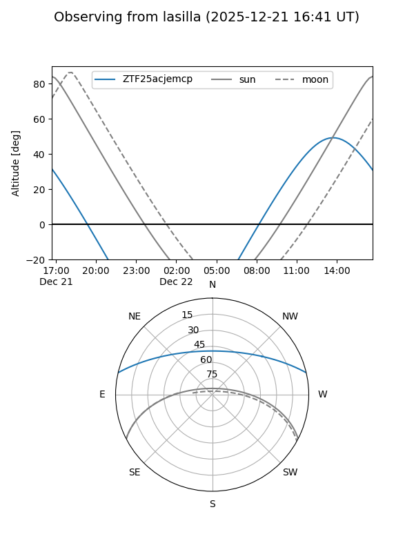

ZTF25acjemcp
Target ZTF25acjemcp at 2025-12-21 15:07
Aliases and brokers:
FINK: fink-portal.org/ZTF25acjemcp
Lasair: lasair-ztf.lsst.ac.uk/objects/ZTF25acjemcp
ALeRCE: alerce.online/object/ZTF25acjemcp
alt names
ZTF25acjemcp (ztf,fink_ztf)
Coordinates:
equatorial (ra, dec) = 226.3801,+11.54415
equatorial (HMS+DMS) = 15:05:31.22,+11:32:38.95
galactic (l, b) = (13.1737,+54.90650)
Flags:
Photometry:
last ztfr=19.62
1 ztfr detections
Lightcurve

Visibility


Additional plots